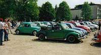
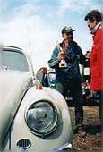
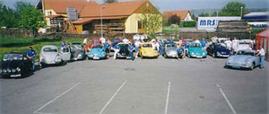

Flyer VW Käfertreffen 2026
Den Flyer zum heurigen VW Käfertreffen in Lengenfeld findet ihr hier.
Flyer öffnenDen Flyer zum heurigen VW Käfertreffen in Lengenfeld findet ihr hier.
Flyer öffnenAm 13. Dezember findet der diesjährige Glühweinstand des Käferclubs Lengenfeld statt!
Der Käferclub Lengenfeld wurde am 4. Mai 1993 gegründet. Unser Ziel war es, ein Käfertreffen der anderen Art zu organisieren.
Nach Absprache mit den Kellerbesitzern hatten wir grünes Licht, und so stand dem 1. Käfertreffen mit Kellergassenfest nichts im Wege. Am 20. Juli 1993 war es dann so weit: Rund 60 Fahrzeuge kamen zum 1. Käfertreffen des Käferclubs Lengenfeld. Die Kellerbesitzer hatten ein reichhaltiges kulinarisches Angebot und erlesene Lengenfelder Weine zur Auswahl. Der Erfolg war auf unserer Seite, und weitere Käfertreffen wurden organisiert, zu denen immerhin schon 220 Fahrzeuge kamen.



Weitere Vorstandsmitglieder: Erich Strasil, Clemens Seiler, Sebastian Strohmaier
VW Käferclub Lengenfeld
Kremser Straße 21a
3552 Lengenfeld
ZVR-Nr. 154601817
Obmann und Herausgeber:
Florian Auer
Technische Umsetzung und Gestaltung:
Daniel Tremmel · Website
Die Inhalte dieser Website werden mit größtmöglicher Sorgfalt erstellt. Der Anbieter übernimmt jedoch keine Gewähr für die Richtigkeit, Vollständigkeit und Aktualität der bereitgestellten Inhalte. Die Nutzung der Inhalte der Website erfolgt auf eigene Gefahr des Nutzers. Namentlich gekennzeichnete Beiträge geben die Meinung des jeweiligen Autors und nicht immer die Meinung des Anbieters wieder. Mit der reinen Nutzung der Website des Anbieters kommt keinerlei Vertragsverhältnis zwischen dem Nutzer und dem Anbieter zustande.
Diese Website enthält Verknüpfungen zu Websites Dritter ("externe Links"). Diese Websites unterliegen der Haftung der jeweiligen Betreiber. Der Anbieter hat bei der erstmaligen Verknüpfung der externen Links die fremden Inhalte daraufhin überprüft, ob etwaige Rechtsverstöße bestehen. Zu dem Zeitpunkt waren keine Rechtsverstöße ersichtlich. Der Anbieter hat keinerlei Einfluss auf die aktuelle und zukünftige Gestaltung und auf die Inhalte der verknüpften Seiten. Das Setzen von externen Links bedeutet nicht, dass sich der Anbieter die hinter dem Verweis oder Link liegenden Inhalte zu Eigen macht. Eine ständige Kontrolle der externen Links ist für den Anbieter ohne konkrete Hinweise auf Rechtsverstöße nicht zumutbar. Bei Kenntnis von Rechtsverstößen werden jedoch derartige externe Links unverzüglich gelöscht.
Die durch die Seitenbetreiber erstellten Inhalte und Werke auf diesen Seiten unterliegen dem österreichischen Urheberrecht. Die Vervielfältigung, Bearbeitung, Verbreitung und jede Art der Verwertung außerhalb der Grenzen des Urheberrechtes bedürfen der schriftlichen Zustimmung des jeweiligen Autors bzw. Erstellers. Downloads und Kopien dieser Seite sind nur für den privaten, nicht kommerziellen Gebrauch gestattet. Soweit die Inhalte auf dieser Seite nicht vom Betreiber erstellt wurden, werden die Urheberrechte Dritter beachtet. Insbesondere werden Inhalte Dritter als solche gekennzeichnet. Sollten Sie trotzdem auf eine Urheberrechtsverletzung aufmerksam werden, bitten wir um einen entsprechenden Hinweis. Bei Bekanntwerden von Rechtsverletzungen werden wir derartige Inhalte umgehend entfernen.
Die Nutzung unserer Webseite ist in der Regel ohne Angabe personenbezogener Daten möglich. Soweit auf unseren Seiten personenbezogene Daten (beispielsweise Name, Anschrift oder eMail-Adressen) erhoben werden, erfolgt dies, soweit möglich, stets auf freiwilliger Basis. Diese Daten werden ohne Ihre ausdrückliche Zustimmung nicht an Dritte weitergegeben. Wir weisen darauf hin, dass die Datenübertragung im Internet (z.B. bei der Kommunikation per E-Mail) Sicherheitslücken aufweisen kann. Ein lückenloser Schutz der Daten vor dem Zugriff durch Dritte ist nicht möglich. Der Nutzung von im Rahmen der Impressumspflicht veröffentlichten Kontaktdaten durch Dritte zur Übersendung von nicht ausdrücklich angeforderter Werbung und Informationsmaterialien wird hiermit ausdrücklich widersprochen. Die Betreiber der Seiten behalten sich ausdrücklich rechtliche Schritte im Falle der unverlangten Zusendung von Werbeinformationen, etwa durch Spam-Mails, vor.